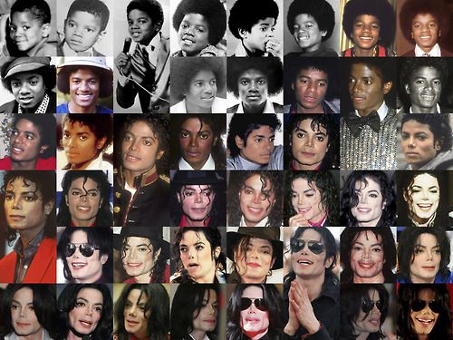

Changing appearance
Jackson's skin had been medium-brown during his youth, but from the mid-1980s gradually grew paler. The change drew widespread media coverage, including speculation that he had been bleaching his skin.
Jackson's dermatologist, Arnold Klein, said he observed in 1983 that Jackson had vitiligo, a condition characterized by patches of the skin losing their pigment, and sensitivity to sunlight. He also identified discoid lupus erythematosus in Jackson.
He diagnosed Jackson with lupus that year, and with vitiligo in 1986. Vitiligo's drastic effects on the body can cause psychological distress.
Jackson used fair-colored makeup, and possibly skin-bleaching prescription creams, to cover up the uneven blotches of color caused by the illness. The creams would have further lightened his skin, and, with the application of makeup, he could appear very pale.
Jackson said he had not purposely bleached his skin and could not control his vitiligo, adding, "When people make up stories that I don't want to be who I am, it hurts me."
He became friends with Klein and Klein's nurse Debbie Rowe. Rowe later became Jackson's second wife and the mother of his first two children.